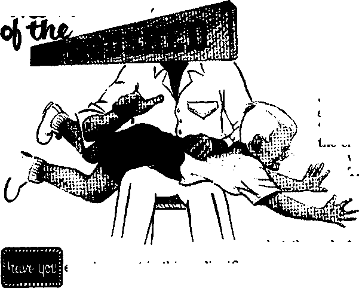

A workable formula for happiness
Are atom-bomb tests spreading bone cancer?
Discipline re-enters the family circle
Sleep can be dangerous
THE MISSION OF THIS JOURNAL
News sources that are able io keep you awake io the vital issues of our times must be unfettered by censorship and selfish interests. “Awake I” has no fetters. It recognizes facts, faces facts, is free to publish facts. It is not bound by political ambitions or obligations; it is unhampered by advertisers whose toes must not be trodden on; it is unprejudiced by traditional creeds. This journal keeps itself free that it may speak freely to you. But it does not abuse its freedom. It maintains integrity to truth.
“Awake!” uses the regular news channels, but is not dependent on them. Its own correspondents are on all continents, in scores of nations. From the four comers of the earth their uncensored, on-the-scenes reports come to you through these columns. This journal’s viewpoint is not narrow, but is international. It is read in many nations, in many languages, by persons of all ages. Through its pages many fields of knowledge pass in review—government, commerce, religion, history, geography, science, social conditions, natural wonders—why, its coverage is as broad as the earth and as high as the heavens.
“Awake I” pledges itself to righteous principles, to exposing hidden foes and subtle dangers, to championing freedom for all, to comforting mourners and strengthening those disheartened by the failures of a delinquent world, reflecting sure hope for the establishment of a righteous New World.
Get acquainted with “Awake!” Keep awake by reading “Awake!”
Published Semimonthly Bt
WATCHTOWER BIBLE AND TRACT SOCIETY OF NEW YORK, INC.
117 Adams Street, Brooklyn 1, New York, U. S. A.
N. H. Know, President Gbant Suites, Secretary
Printing this issue: Z,400,000 Five cents a copy
OtMr Inulin is which “Awuket” It pibllilM: Sililmonthly—Afrlkaanr, Finnish, French, Orman. Greek, Scllanhldi, Italian, Norwegian, Spanish, Swedish.
Monthly—Danish, Japanese, Portuguese, Ukrainian,
Yearly eubicrlpllou rates
Dfliu for resrlmonthlr editions
A ■srica, R.S., I IT Adams St., Brooklyn 1, N.T fl Aastralla, 11 Beresford Bd., atrsiMeld, N.S.W. S/. Canada. 150 Brldkelund Ate., Toronto 10. Ont, fl England. 34 Craven Terrace, London w, 2 7/-
dav iulMd, G.P.O. Bar 30, Weijlrsue, C, 1 7/-Soath Africa. rrfrate Bag, Elarufiftmiefn, Tri, tf-
Monthly editions coat half ths ahon rrtws.
RamlttanHi should be sent la offiee In your Emns-try In combllanee with recalattrma la guarantee sate dellaory or money, Kemituinees am accepted at Brooklyn from countries where an office la located, by International money order only, Subscription rata In different eounlrtes are here Elated In local currency Kotlas of expiration (with renewal blank) la sent at least two Isuee before subscription ex. plres. Charts ef address when sent to our office may be exptctwl effective within one month. Send your rdd as well as new address, Entered no wconci-elaGx matter at Broufclytr, A". T.
Printed In U.S.A
CONTENTS
|
Propaganda—Insidious Foe |
3 |
The Indian Knew His Forests | |
|
Finding Happiness in a Troubled World |
5 |
A Lake’s Disappearing Act |
23 |
|
The Return of the Woodshed |
8 |
The Lord Bishop No Bible Scholar |
24 |
|
Mice Do Sing! |
12 |
“Tour Word Is Truth" | |
|
Built-in Trawler’s Net |
12 |
What Does It Take to Become a | |
|
Bedtime for Animals |
13 |
i Minister? |
25 |
|
The Pachinko Craze |
16 |
Jehovah’s Witnesses Preach in All | |
|
What Fate for the Human Race? |
17 |
the Earth—Finland |
27 |
|
Brains According to Race? |
20 |
Do You Know? |
28 |
|
Fetishism in Western Europe |
21 |
Watching the World |
29 |
^loT all propaganda comes from politicians. Actually, we are almost daily victims of some sort of propaganda. ‘'Propaganda” is any concerted, systematic effort to convert your mind and to hold it to a particular way of thinking. Often it is a sly type of publicity used to win over the gullible and unwary. How could you be its victim?
Political propaganda, favoring a particular country, is relatively easy to recognize. But it is not so easy to recognize other kinds of propaganda, because we have not usually been so well trained to be on our guard against them.
Propaganda may be for either a good or a bad cause, but to protect yourself from the wrong kind of propaganda you must recognize almost any kind when you see it. Only by being alert can you accept only what logic and reason tell you, rather than what the propagandists want you to believe.
Stories, dramas, television plays and advertisements all help to propagandize, swaying your thinking, persuading and convincing people that a certain idea is right. Sometimes they sway thinking for good, sometimes for ill; but they sway it, just the same.
The novelist, the story writer and the playwright all have "something to say.” Their characters must not only progress through the story but also must make some point, or illustrate some fact of life. Perhaps the moral is that virtue pays (a good moral), or that fighting for a particular nation is noble (at least the enemy would consider this a bad moral), or it might even imply that fornication and immorality are rampant and that there is no real hope, thus that you too might as well join the debauchery. Certainly this would be one of the worst types of morals.
False propaganda has been especially evident in crime comic books, which have implied that it is fun to be bad. A U.S. Senate subcommittee said that overly brutal, violent or sadistic motion pictures were potential “trigger mechanisms” for juvenile delinquency.
The fact that propaganda can be and is contained in plays and stories is shown by the way racial groups often protest being portrayed in a bad light, and by the manner in which pro- and anti-racial in-tegrationists often react to moving pictures that deal with either a racial issue or co-operation between the races. An outstanding example of* this was the nineteenth-century novel Uncle Term’s Cabin, by Harriet Beecher Stowe. Called “one of the greatest pieces of propaganda in the history of mankind,” it became an incredible best seller and a powerful weapon iir the fight against slavery.
Sometimes even religious ideas are presented in this way, when motion pictures paint a particular religion, or its doctrines, in an exceptionally favorable or highly emotional light. In wartime the political use of such propaganda is especially evident. On both sides the enemy is characterized as being made up of horrible, sadistic villains, and the nation’s own side as being the heroes.
In all such propaganda the author’s view may be either right or wrong. It may agree with your view or disagree. But unless you are alert you may readily accept a view that, under normal circumstances, you would have rejected with but a moment’s thought.
Then too the power of commercial advertising, while obvious, serves as another means of propaganda. Consider merely the transcribed ecstasy of the pro-tobacco propaganda broadcast over commercial radio and television. Incessantly you are barraged with: Have fun. Smoke modern. Smoke real. Be a man. Join the crowd. Why be an outsider? Smoke,, smoke, smoke, smoke. Propaganda? Of course!
Logic, reason and medical science show smoking is bad for the health, shortens life and is a major source of lung cancer. The American cigarette advertiser’s slogan that his product tastes good, “like a cigarette should/’ would be more appropriate if it said that the product tastes good, “like a coffin nail should.” But logic, reason and science say one thing about tobacco, while some of the world’s highest-paid propagandists say the other. Are you In their grasp?
Even the comic strips in the daily news-papers often propagandize, preaching the authors’ ideas. Look at some of them and see if they could have influenced your thinking.
Consider the popular “Orphan Annie.” Is this story of a little orphan girl innocent? Not quite. A running commentary on the meaning of life pours forth from the child's mouth. Perhaps you agree with this commentary. But would you agree if you had to take the ideas straight, instead of in a sugar-coated story form?
In the background is "Daddy Warbucks,” the strip’s hero. Is he your type of hero? Is your type of hero the man who made his “bucks” in the war. who is a mighty financial genius, fabulously wealthy, with many enemies, who takes the law into his own hands, and who, through his “friends,” can always make a comeback from abject poverty brought upon by his enemies and regain tremendous riches from unexplained sources? The strip's message is strictly materialistic. The rich man is the “good guy,” and the “good guys” become roaring materialistic successes. Materialistic propaganda? What else is it?
“Steve Canyon” plugs the glamour and adventure of an air force career; “Doctor Morgan” presents the medical viewpoint, often exposing quackery and superstition; "Pogo,” the story of a friendly opossum, often contains sly, gentle and sometimes excellent political satire.
There is nothing wrong with people expressing their ideas in stories, plays or the comics. People express ideas in almost everything they do. But the important thing is to recognize that ideas, and perhaps false ones, can be presented in this way. Otherwise such ideas presented through an entertainment medium can often catch us with our judgment asleep.
jjiftpputm
Some hold that happine&s
tne latter part of 1956 a Buddhist pro-
TROUBLED WORLD
is merely a matter of be ing easy-going. Others say it depends upon ma ferial things. How can it be found?
fessor of a Bangkok university visited the United States. Proud of his philosophy, he invited Americans to come to Thailand to learn the secret of happiness. And what is that supposed secret? “Leave well enough alone.” “Afcii pen arai.” That is, “It hardly matters.” “Next time you will meet with better luck. Never do today what you can put off until tomorrow!” —New York Times magazine, December 2,1956.
Western, worldly-wise agnostic British philospher Bertrand Russell begs the question. He says happiness depends primarily on physical health and exercise. And “if a man delights in his wife and children, has success in work, and finds pleasure in the alternation of day and night, spring and autumn, he will be happy whatever his philosophy may be.” But what about finding happiness when one does not have even one of these, let alone all of them?
The ancient Greeks had a proverb, “Let no one be called happy till his death.” Even less optimistic was Edison. To a reporter’s request, “Please give briefly your formula for a happy life,” he replied: “I am not acquainted with anyone who is happy.”
Happiness is a highly desirable state.
The Bible speaks of the Creator, Jehovah, as “the happy God,” and of his Son, Jesus, as “the happy and only Potentate.” Since Jehovah God did “create the man in his image,” God created man to be happy also.—1 Timothy 1:11; 6:15; Genesis 1:27, New World Trans.
Without happiness there is no pleasure in living. It is happiness that brings real satisfaction and makes living worth while. Unhappiness began in Eden. Ambition made a
certain angelic creature unhappy, who thereby came to be Satan the Devil. He took advantage of Eve’s lack of
appreciation of what God had done for her. For selfish reasons he tempted Eve to partake, likewise for selfish reasons, of that which had been forbidden her. Lack of appreciation caused Adam also to trespass.
Among the fruits of that original sin is mankind’s ignorance of God, which accounts for much of this world’s unhappiness. Many are unhappy because of being confused, vainly groping and seeking to find God. They are unhappy because they see so much suffering and injustice, and they wonder why God permits it and if it will ever end. No Oriental, happy-go-lucky philosophy can satisfy such sincere inquirers for truth, much less bring them happiness.—Acts 17:27.
False religious teachings must also shoulder a large share of the blame for the lack of happiness. False religious teachings have confused men by the Babel of creeds, have put men in fear of men and, by their false teachings about torment after death and the fiery end of this earth, have, says Jehovah, “grieved the heart of the righteous, whom I have not made sad.” —Ezekiel 13:22, Am. Stan. Ver.
Selfishness, in the form of materialism, accounts for very- much of the unhappiness of man. This materialism manifests itself in pride and ambition, which keep persons going at a mad and envious pace, robbing them of happiness. Anxiety, greed and stinginess are other forms of materialism that prevent persons from finding happiness. No matter how much the materialistic person acquires, he is not happy. He craves still more. No wonder Solomon said that the accumulating of material riches is vanity. In passing, however, let it be noted that going to the other extreme, that of selfish indolence or laziness, is not the way to find happiness either.
The destructive emotions of fear, distrust, jealousy, hate, anger, rebellion and frustration also cause much unhappiness. So also do nursing a grudge or cherishing resentment. Strongly desiring something beyond one’s reach, because of its being too costly or unlawful, is another widespread cause of unhappiness.
Many persons are unhappy because of boredom. Fearing it, they pursue pleasure^ which, however, does not bring happiness. We cannot find happiness by pursuing it. To do so is merely a vain attempt to escape realities and cover over the cause of unhappiness. Yes, being “lovers of pleasures rather than lovers of God,” far from bringing happiness, accounts for much unhappiness.—2 Timothy 3:4, New World Trans.
Finding True and Lasting Happiness
There are many good things that bring a measure of happiness. Among these are 1 loving family,' true friends, interesting ind rewarding work, doing good to others, jontemplating the wonders of nature and listening to good music. However, all such things at best can bring only a limited and Meeting happiness.
Many persons think that material riches, jr youth, or health, or popularity, or acquiring artistic skills, or fame, spell out happiness. But not so. Not one of these is a common ground for happiness. Why not? Because there are persons who are very unhappy and who possess one or more, or even all of these things. On the other hand, there are persons who are very happy and yet do not have one of them.
Then what is the common ground for happiness? Worshiping God with spirit and truth. And that means, first of all, taking in knowledge of him and of his Son, Jesus Christ. We must not only believe God exists but believe that he is a God perfect in wisdom, justice, love and power. In his Word, the Bible, he both reveals himself and acquaints us with his purposes. It shows why God has permitted so much evil, because of the issue of sovereignty raised by the Devil, and it gives us assurance that evil will soon end.—John 4:24; 17:3.
Such knowledge brings happiness—provided one acts in harmony with it. Yes, finding happiness requires of us consistent action; it is something we must work at; it must be earned. That is why the Scriptures stress not only the need of our taking in knowledge but also of following the course of wisdom to find happiness: “How happy is everyone who reveres the Lord, who walks in his ways!” “Happy are those who keep my ways.” “Happy is the man who lives always in awe” of Jehovah. “Those who obey the law—happy are they!”—Psalm 128:1; Proverbs 8:32; 28: 14; 29:18, An Amer. Trans.
To find happiness we jnust have a good conscience. We must not only love what is right but hate and put away from us what is. wrong. We must put forth consistent and diligent efforts to lead clean, upright lives. And when we transgress? We must plead for forgiveness on the basis of our faith in Christ’s sacrifice and our own extending of mercy to others.—1 John 2:1; Matthew 6:12.
We must learn to be content if we would find happiness. Generosity/in line with God’s purposes is a sure Way to find happiness: ‘'Happy is he who is kind to the poor.” (Proverbs 14;21, Rev. Stan. Ver.) But, above all, love is indispensable to our finding happiness. God is love and God is happy. Being created in his image and likeness, must likewise express love to be happy. It is therefore for our own good that God commanded: “You must love Jehovah your God with yotjr whole heart and with your whole soul and with your whole mind and with your whole strength.” And “you must love your neighbor as yourself.”—Mark 12:30, 31, New World Trans.
Love seeks to make others happy and thereby makes itself happy. It does not draw within a shell but delights to share its blessings with others, be they of a spiritual or a material kind. Love experiences the truth of Jesus’ words that “there is more happiness in giving than there is in receiving.”—Acts 20:35, New World Trans.
Happiness Can Be Found
Edison may not have known a happy person, but there are happy persons. A German refugee, now in the United States, told of his experience in a Russian labor camp and how he and his companions marveled at the happiness of the witnesses of Jehovah who had been held there for some ten years and who, most likely, will be there for many more years.
The happiness of. those who engage in Jehovah’s pure worship, the Christian witnesses of Jehovah who form the New World society, is frequently commented upon by the public press; it being noticeable especially when they are holding their assemblies. Thus the press, both in Europe and in the United States, commented on three striking aspects of these assemblies: the number of young persons present, the orderliness of the crowds, and their happiness, how obviously they were enjoying their religion. And that is exactly as it should be.
Happiness does not result from adopting an Oriental philosophy of selfish indifference to this world’s woes; neither does it depend upon the possession of material things. We find happiness by getting in tune with our Creator, by loving him with all our heart, mind, soul and strength and loving our neighbor as ourselves. This being so, we can appreciate more than ever what Jesus said about happiness in his sermon on the mount:
“Happy are those who are conscious of their spiritual need, since the kingdom of the heavens belongs to them. Happy are those who mourn, since they will be comforted. Happy are the mild-tempered ones, since they will inherit the earth. Happy are those hungering and thirsting for righteousness, since they will be filled. Happy are the merciful, since they will be shown mercy. Happy are the pure in heart, since they will sec God. Happy are the peaceable, since they will be called ‘sons of God’. Happy are those who have been persecuted for righteousness’ sake, since the kingdom of the heavens belongs to them.”—Matthew 5:3-10, New World Trans.
'uFisfi Catons ‘EFisItemait
Here is a new twist on a fish story. Lynn Hoover was ice fishing in Centre-vi]]e, Michigan, A fish gave a sudden jerk at the bait. The jerk cracked the ice under Hoover’s feet. Instead of Hoover landing the fish onto the ice, the 8sh landed Hoover into the lake.
'The Mtnvuc
ever been put in this undignified position, over the knee, face down, and bawled to the accompaniment of the heavy beat of parental hands? If you have you might be considered living evidence of a nearly outmoded age.
We were reminded of this when we read a heading in the New York Times, January 24, 1957, “Teacher Upheld in Hitting Pupil.” Complaint was lodged against a teacher by his twelve-year-old pupil who was punished for unruliness in class. The issue revolved upon the question of whether the punishment was "reasonable in manner and moderate in degree.”
It seems from the report that the evidence presented in the case disproved the claim of mistreatment or illegality of the treatment administered, so the teacher was acquitted of the charge of cruelty. Judge John P. Griffith, who heard this case, said in his opinion: “It is the thought of the Court that the teacher must be supreme in his classroom; like any other person placed in authority, he must use the authority vested in him wisely, and never excessively.” uovjousiy me wise judge recognized mis controversy to be a touchy subject, and supported his legal arguments by several apt quotations from a source higher than man’s authority, the Bible. Judge Griffith said: '‘The permission to mete out reasonable and moderate punishment finds sanction in Holy Writ.” He then quoted from the book of Proverbs: “Withhold not correction from the child: for if thou beatest him with the rod, he shall not die. Thou shalt beat him with the rod, and shalt deliver his soul from hell.” “Foolishness is bound in the heart of a child; but the rod of correction shall drive it far from him.” And: "The rod and reproof give wisdom: but a child left to himself bringeth his mother to shame.”—Prov. 23: 13,14;22:15;29:15.
This is not the first case (and most likely not the last) to be brought into court by irate parents complaining against force used by a teacher to correct or restrain an unruly offspring. AJ1 the same, it makes us wonder what attitudes on discipline have given birth to the modem parents’ liberal views on this subject of discipline.
Two or three decades and longer ago saw a stem parent who looked upon spanking as a necessary disciplinary measure; in fact, it was thought to "build character” in a child. Typical Victorian-type practical psychology was, to bed without supper and a spanking to boot. Probably such old-fashioned faith in spanking as a cure-all was the chief reason for the adoption of such opposite views in more recent years.
Then in came the age of freedom—for children, that is. Psychologists mushroomed, dissecting humanity of every age group. From beneath their hocus-pocus somehow it was the kids that came out winners. Advisers on parent-child relations then said spanking as a disciplinary measure was out of date, and so the “permissive" school of child psychology took the field.
Perimasivene^B on the Wane
Used in a psychological sense, permissiveness means allowing the child to be himself, however unpleasant this self may be at the moment, all in the hope that if he feels he is accepted he will be able to change for the better. Marching into a new and unproved field with all the assurance of a fanatical rookie soldier, the experts sent forth a flood of advice. In no indefinite terms they encouraged young parents to ‘understand’ their child, assume the child's point of view. Years were spent inspiring teachers and parents alike to develop the needed patience (and nerves) to endure the rigors of permissiveness.
The results, however, of treating children as miniature adults, as equals, has not brought its anticipated rewards. And so, after having many young parents spend baffling years, mentally down on hands and knees, trying to understand tantrums and disobedience from the child’s point of view, trying to get into the child’s world, what happened? You guessed it! The authorities did an about-face. They now say children need spanking.
If you have ever visited a home with the hope of conversing with the adults living there and been unable to hear or be heard because the child—yes, sometimes just one —causes so much hysterical racket that you can neither talk nor think, then you might suddenly become an advocate of corporal punishment. Parents who allow bedlam to exist in the home, who allow themselves and their friends, should they have any left, to be made the victims of infantile tempers or nagging histrionics, and who condone it all with enraptured glances deserve their punishment. On the other hand, u tne child is ever to learn that its good behavior contributes to its own welfare and acceptance, then give the child the punishment it deserves.
We have seen the change from administering harsh and frequent punishment to excessive permissiveness, from too much concern with exacting authority to trying too hard to get into the child’s world. Now in this new middle-of-the-road policy parents are no longer urged to be completely child-centered. There are those who still feel permissiveness is a useful but much misunderstood tool of constructive discipline. There is, however, a heartier crop of advisers taking up the cry for a stronger measure of discipline.
Possibly this (welcome) throwback has come about in the last several years after some of the experts in this field have taken a look around them at the generation of geniuses; or perhaps their nerves too gave out with the number of complaints registered by parents who were not mentally capable of understanding their little darlings. In any case, the dim view shared by many who looked upon this so-called progressive method of child-rearing with paralyzing dread of the future can now take heart in the hopeful march back to the woodshed.
One of many such authorities stumping for this platform is Mrs. Esther Schour, administrative director of the child care division of Chicago’s Institute for Psychoanalysis. She tells us: “Discipline is as necessary to a child’s upbringing-as food and shelter. His parents represent law and order. Without restraints, a child may become a victim of his own lack of self-control. ... If he is permitted to behave as he pleases, if he is given whatever he wants without effort on his part, he will be shocked to learn that things don’t come as easily on the outside. Demanding children will have trouble adjusting to society.”
For the Child’s Good
The basic fallacy of treating a child as an equal, when it is not mentally or emotionally capable of such treatment, is not teaching it responsibility. A child given a choice between two or three things will no doubt make a decision, but this does not prove it is the right decision for the child. And to be allowed to decide its own behavior has not made heroes out of “hellions.” One ided went so far as to suggest to a young mother that she allow a young child to decide what food to eat. This kind of conditioning might lead to malnutrition, If the taste of most children were t en ’as a guide. At most it merely apprises the child of the idea that the parent has no control of the situation and that he—the child—is the head of the house.
Let a parent be subservient to the child! He then loses completely his own world, and his own interests must give way to the demands of the child And it does not take a young child long to leam how it can demand all of a parent’s time when given liberally. Allow the child to rule the home and it will. Such a practice is certain eventually to irritate and frustrate parents, leaving them helpless. With all time and attention taken by the child, one has ho time to live as a person in his own right, no time for adult pursuits. No control over your children means no control over your own life. Family life may have a modifying effect upon parents’ individual interests, but it certainly should not be allowed to eliminate them.
Children who are almost always given their own whims and ways are bound to be frustrated. They never leam from this procedure the difference between right and wrong. Often a parent following this erratic path lets his temper loose at some point along the way and spews all his pent-up anger at the child, sometimes when triggered by an insignificant incident that may have gone unnoticed times before. A youngster's reaction could hardly be less than confused by such uncontrolled discipline.
When a child is assured of his parents love, a spanking will not hurt too much. Keeping a child under reasonable control at all times and being extra firm when things threaten to go wrong has proved to keep many a home happy and content. Naturally, the parent should not express deep anger and distrust by severe punishment. But justified discipline, administered for the child’s welfare, has at least one imperative reason for being restored to every home. Spankings now can avert beatings later. They will not be so harsh as the punishment the world will surely inflict upon a child allowed to rule himself.
One question upon which there seems to be no consistent opinion is that of how early a parent should begin to discipline his offspring. Many hesitate to start a rule of action too young. Yet the longer a child, a very young child, is allowed to rule itself the more difficult will be its reception to discipline when it is at last administered. Just think! Once a baby starts to notice things around it, from that time on it experiences new things, almost daily. It is living in a world in which everything is new and is being educated constantly to its surroundings. A baby of a few weeks soon learns to scream for attention, and quiets down when that attention is given.
Once a tot starts reaching for things, which it does in a matter of months, it is possible to teach it which things it can be allowed to touch or hold and which things it cannot. A little slap on a tiny hand is a hard thing for most mothers to give, but it could teach a baby not to reach for such things as safety pins, hot electric light bulbs, or anything else that is not good for the child to have. The child can leam at this age that some things are permitted him and some things are not. This, by the way, is the only time to start teaching a child that house furnishings are not toys.
Some may wonder how a mother can raise several happy, contented children in a home with lovely, valuable knickknacks and fixtures, all intact, when her neighbor complains that the whole house must go to ruin while the youngsters are growing up. Start discipline too late and tantrums will meet your punishments. Allow a child to become fixed in his own ways und your job as a parent will assume gigantic proportions.
Discipline to fit the Child
As a child grows and his own personality becomes more clearly described, it must be remembered that discipline should be varied to fit the particular nature of a child and should change with the child's development. Dr. Fritz Red], who has lived and worked with difficult children in camp situations and study-treatment homes, has this to say: “Children are at least as complicated as a piece of wood. So you had better find out about their individual textures, elasticity and grain fiber before you apply your various tools and machinery.”
Sometimes a mother can simply remain silent, refuse to communicate with a child who has been disobedient. This may have sufficient disciplinary effect upon a sensitive child, provided it is not used to excess so that the child resorts to more disturbance in an effort to attract the attention of the parent. On the other hand, spanking is not always the answer when an unruly child has adopted a callousness for this kind of correction. The denial of a favorite pastime, or the usual privileges, may have a stronger appeal to such a youngster. And then, if the child is of an understandable age, it would be well to try to find out what really bothers him, what the conflict is, by questioning him in a kind and understanding way.
If there is some basic conflict, the time to get rid of it is in childhood. In order for this to be done some understanding and trust must exist between parent arid child. Trust is built upon the proved and dependable word of a person. Deciding up» on a good cofurse of action and pursuing it with an even disposition will make much more sense to the child and everyone else within earshot—especially the rest of the children in the family.
Example, Guidance, Responsibility
Keep In mind that a small child begins to learn by imitation and repetition. Know that your example of truthfulness will always leave its mark upon him. If you promise to spank if Junior misbehaves in a certain prohibited way, then keep your word. If you say you will spank when he disobeys and then do not do so, do not wonder why he continues unruly in the future. A child must have a dependable pattern to follow. Your word has as much meaning to a child as your regularity in enforcing it. Otherwise a child is confused as to when to associate your word with truth. His own truth-telling depends on your example as a parent. In short, children need leadership on how they must learn to act.
When a child fully relies upon his parents because he has found their advice to be always the best, he will seek that advice in difficult times and readily confide his troubles, having been assured they will be heard with an impartial, loving ear. When parents are not eagerly sought by their children for their counsel it may be time to examine the attitude of the adult rather than the child.
Love is a most necessary thing fop the child to have and to be assured of having. A young child will sometimes look upon a spanking as evidence of a lack of love. So, parents, be certain you exercise your authority and power in an even disposition of justice. A child’s young mind understands very well impartial justice, so hew to that standard. If there is any doubt, take the child aside and tell him the reason for discipline. This should serve also as a check upon parents who have an inclination toward expressing temper with a cudgel, After all, do we not insist on a fair hearing in the administration of justice? Your child’s love and respect will reward this kind of patience.
AUGU8T 8, 1957
11
Too many children are not given responsibilities in the home, or made to feel that they are to contribute to the well-being of home life. By little things, regular chores at home, a child can be taught responsibility at a young age. These home duties can be enlarged as the child grows and will fill him with a sense of achievement for having done his job well. As stated by a director of boys’ work for a community center, “Work teaches much that play does not. It provides a feeling of recognition, belonging, acceptance and responsibility.”
Parents certainly should show appreciative response for his consideration but not adopt the popular idea of paying money for their child’s services. Raising privileged characters to do things only for a reward in money never educates a child to the proper understanding of family life, a working organization founded on mutual love and respect.
Remember, too, fathers and mothers rub off. Whatever the child experiences in his tender years will probably be repeated in his own household when he grows up. A sense of responsibility should be stirred in his heart early in life. For how is he suddenly going to learn that something like being able to accept responsibility is a part of life?
There is really no short cut to maturity in the life of a child. The road to it is long, narrow, winding and time-consuming. The goal can be achieved by all who persevere. And we have this on the highest authority: “Train up a child in the way he should go, and even when he is old he will not depart from it.”—Proverbs 22:6, Am. Stan. Ver.
M MluL bu JTOfc
Occasionally an astonished housewife hears what she thinks could be the song of a mouse. She may not want to express her wild thought to anyone, thinking it too ridiculous to be true. Yet it is true. Mice do have singing ability.
Whether or not the songs come from a romantic-minded mouse, mice make a high, wiry, warbling little trill, almost canarylike. But the songs of mice, like bat cries, are not often heard by us because the sounds are mostly beyond outrange of hearing. Few housewives lament this fact, though, feeling that they can well do without mouse music.
Built-in Trawler's Bet
Have you ever wondered how air-breathing whales can swim under water with their mouths open and riot drown? It is quite simple for the whale, since his nostrils are located near the top of the head. The Creator saw that it would be wise to have the whale's windpipe and lungs cut off from his mouth. Thus the whale has a built-in trawler's net, for he can swim under water with his huge mouth open and feed without fear of drowning.
THE pussycat, curled up in a ball fast asleep, is a common sight. But not so the animals of the field and forest; for the wild creatures, even at bedtime, are not in the habit of being catight napping. They, in a sense, keep one eye open; their lives depend on it. They must always be ready to escape for their life. Bigger animals, of course, have fewer worries, but they too have problems. How nature’s creatures solve their bedtime problems is often strange and surprising.
From the human standpoint snakes and fish really have a problem. They have to sleep with their eyes open. They have nothing to close them with. That is why it is difficult, when looking at a resting snake, to tell whether it is asleep or awake. But the eyelid problem is really no problem at all, for these creatures get all the rest they need. In fact, not having anything to close their eyes with may be an advantage in snakedom and fishdom: for safety it pays to sleep with one eye open, but they can sleep with both eyes open!
Now what does a fish do when it wants to snooze? The recent unraveling of a fish mystery at the University of Wisconsin provides the answer. Four men had followed a school of perch with an echo sounder, a device used by commercial fishermen to find a catch. Then the mystery developed: at dusk the echo sounder could not pick them up. What had happened? A diver was sent down at night with an undersea flashlight. He found the entire school, thousands of fish, dozing on the bottom. When disturbed by the diver they swam off a little way and found a new place to snooze.
Some fish want more privacy than merely dropping to the bottom. So the razor fish burrows into the sandy bottom; only his head sticks out. After a while it buries itself completely with sand! Other sea creatures catch a nap by hunting out a crevice in a rock ledge where they can sleep safely.
One might think that the wild folk of the woods would have less of a bedtime problem than the fish. But wild animals, finding it vital to be perpetually alert, seldom take long snoozes. A few minutes for a nap, then they must wake up, reassure themselves of safety and nod again. The rabbit is an outstanding nap-per; his whole life is a round of naps. During a twenty-four-hour period Mr. Rabbit takes about sixteen or more naps.
Creatures of the wild, understandably, have a method in their bedtime habits. A covey of quail have a curious way of snoozing. The birds go to bed by arranging themselves in a closed circle with their heads turned outward. They do this for two reasons. It provides warmth and protection. If snow falls the birds do not need to stir; their sleeping strategy provides them with a protective warm blanket. And if, a fox wants quail on the menu he will really have to be foxy, for at the fox’s approach the alarm is sounded and all the birds take off simultaneously in the direction they are headed. How confusing this must be to the marauding fox.'
Burrowing animals are among the soundest sleeper's in animaldom. Perhaps this is because they feel so safe in their underground chambers. The ringed snake, however, gives the borrowers some competition for sound snoozing. About 2 p.m, the ringed snake takes his siesta. But what a siesta! For this snake sleeps till midday; then it gets up and makes its living. After two hours of activity this snake goes off to sleep again, sleeping round the clock till noon of the next day!
In coptrast with nature’s sleepyheads there are what might be called nature’s insomniacs. Of course, this is looking at It from the human standpoint; but certain animals do appear to have trouble sleeping. Some humans with insomnia count sheep; such persons probably do not realize that sheep themselves do little sleeping. Cud chewing seems to make sound slumber difficult.
According to British dairy expert C. C. Balch of the National Institute for Research in Dairying, not only sheep but cows, giraffes and camels sleep “little if at all.” He says that cattle keep their eyes open almost all the time. He has often questioned zoo keepers about the nondomesticated cud chewers and found out that these animals seem never to be caught napping. When these animals do lie down at night they cannot toss and turn as human sufferers from insomnia do. They lie down in a certain position with their heads up. Apparently the digestive habits of some cud chewers require that their organs do nor wi the wrong way. But these creatures seem to get the rest they need. Even when away from their sleeping quarters cud chewers do a little dozing; their food digestion often takes place with the eyes half closed, automatically, as it were.
Sleeping Standing Up
The animal that is really expert at standing-up sleep is the elephant. Some elephants never seem to lie down. Louis XIV had an elephant, history tells us, that never lay down for five years. When it napped it supported its head by thrusting the tips of its tusks into two holes it had worn into the stonework of its enclosure.
Elephants, however, also lie down. It has been found that circus elephants, as a rule, do not go to sleep before midnight. Then the healthy animals lie down at full length with their trunks coiled up like a ship’s rope. They sleep only for about three hours. If an elephant is not feeling well it prefers to sleep standing up. Standing-up sleep lasts for about fifteen minutes. When an elephant goes to sleep standing up it becomes quiet, stops its ear-flapping, hangs its trunk limply and closes its eyes.
The gorilla has no envy of the elephant’s standing-up sleep, for here is an animal that likes solid comfort. Prying into the domestic life of these powerful creatures, we find that papa gorilla is the undisputed ruler of his household. He rules with an iron paw, sending the members of his family to bed every evening up a tree of his own selection. There the females and youngsters at least make a good pretense of sleeping, for the ruler of the household will not put up with any nonsense. With the family tucked away in bed upstairs, papa gorilla then establishes himself for the night.
Though the ruling male gorilla may himself sleep aloft, especially in the lowland forests, he usually remains on the ground, sleeping at the foot of a tree. Several naturalists have reported that they tried the experiment of lying where a male gorilla had Iain. In every case they Were able to see from his couch the treetop beds of the females and the youngsters. Papa gorilla really keeps an eye on his family!
Believing in comfort, papa gorilla makes himself a spring mattress or the closest thing to it. The bed, about nine feet by six, is made of. young saplings covered with stout branches. Then this is covered by a very thick layer of leaves. A male gorilla’s bed is so comfortable that one woman traveler said she would not mind sleeping overnight in a gorilla-type bed. With a bed like this papa gorilla really erfjoys his sleep; in fact, he spends a large part of the day in sleep, being a very late riser. He feels secure in his sleep, for what animal would have the temerity to disturb a snoozing gorilla? Really a picture of contentment, papa gorilla sleeps on his back with his arms crossed behind his head.
Beds Are 'Where They Find Them
Some creatures find strange beds for themselves. The ruffed grouse plunges into a snowdrift from the wing and spends the night snoozing in a ready-made igloo. Bats have a variety of beds and bedrooms. They especially like belfries, abandoned quarries and caves. When bats go to sleep they usually hang head downward by the claws of their hind limbs, one of the most unusual sleeping postures in animaldom. Sea gulls nap floating on waves. The duck too dozes on water. When doing so it has to be on guard against shipwreck, so it paddles with one leg. One zoologist reports: “It keeps on describing circles like a boat being rowed by one oar, and thus escapes the constant threat of shipwreck on the shore from winds or currents.’*
Also enjoying some slumber on the water is the sea otter. Before turning in for the night, Mr. Sea Otter makes himself a bed of algae or seaweed. To prevent drifting while asleep these sea sJumberers often cling to the seaweed or roll themselves up in the plants. A sea otter, floating on his back, chin on his chest and moored to his bed, is a comical sight indeed.'
Napping on water is also a favorite pastime of the hippopotamus. This huge animal basks in the sun on the surface of the river with his huge head pillowed on his neighbors' backs. When the hippopotamus naps on the river bank it has the odd habit of using the youngsters as pillows!
Though the sea gull may be satisfied with its naps on water, most birds prefer to make their beds in trees. When a bird dozes off, how is it that he never falls from his perch? Birds have a long tendon attached to the cords that operate the birds’ toes. When a bird sits down its knees and ankles bend and automatically tighten this tendon. The taut tendon contracts the bird’s toes, which then grip tightly—and the bird is locked to his perch. Monkeys too have no worry about falling out of their treetop beds. When a monkey goes off to sleep his fingers automatically lock on nearby branches. Let the wind blow; let the cradle rock. It is of no alarm to the slumbering simian.
So nature’s creatures of the wild, despite perils from wind, water, snow and enemies, solve their bedtime problems and get the rest they need. And who can say that they do not enjoy it just as much as the pet pussycat curled up in a ball, dozing without a care in the world?
wf "motir torr»»pw»<J»nt In Japan
ffJST as jazz swept the United States fol- X lowing World War I, so too a new kind of X music is now sweeping Japan. It is a music far different from the folk music that many $ Japanese love so well. The new rhythmic drone X heard in almost every street in the country is the strident music of the pachinko parlor.
Tg Old and young, male and female, grand- X father and schoolbay—all come to play on the % pachinko board. Idle hands that would rathcr do nothing than something are busily pushing £ the pachinko button. The pachinko parlor is $• filled with smoke and noise. The monotone din of pachinko balls drowns all speech, but X the pachinko addict probably does not have * anything to say anyway. His eyes are fixed on -j-tiny circling balls in the upright pinball X machine. X
Here is a pastime designed just to waste ’> time. Countless precious hours are wasted, $ life and money are gambled away to the mo-notonous song of the pachinko ball. If you y play a hundred yen (360 yens to a dollar) there •£ is a chance of your winning a package of X cigarettes. There are occasional winners. But •? the only real winner Is the pachinko parlor y owner.
Pachinko eats at the vitals of a nation. It X fosters the gambling instinct. It incites the £ idea of trying to get something for nothing. It encourages laziness. When one of Jehovah’s witnesses calls at the home of a pachinko addict, his' pet reply is, "Hima ga nai!" ("I X have no time!”) yet he spends most of his X time at the pachinko parlor. The only message J he reacts to is the dull za-za-za-za-za of pa- $ chinko music. X
U What effect will the pachinko craze have $ oh the fine and beautiful culture of this coun- *J-try? Signs show that it is leaving its mark. X The high proportion of pachinko addicts does X indicate a lowering of moral values. Pachinko parlors continue to occupy the choice places In city business districts. In one year Japanese spent 100,000,000,000 yen, or 11.7 percent of the entire national budget, on pachinko! The pachinko machine robs workers of their hard-earned wages, impoverishes homes, has led to divorce and even suicide and murder.
Two teen-age boys sold their personal belongings to play pachinko, then sold their blood, and when taken into custody were too weak to talk. Housewives neglect their babies, students neglect their studies. Some become raving pachinko maniacs, and there has even appeared a new malady, the sprained thumb known as pachinko-itis. The dinning music of pachinko and the thriving prosperity of this gambling craze make Monte Carlo, Macao and Las Vegas seem small-time operators in comparison.
Pachinko is a colossal craze with sinister effects. It has all the sinister characteristics of big-time gambling. For though the paridw-ko fan gambles for cigarettes or canned goods instead of money, it is still gambling. Hence Durant Drake’s remarks appearing in his book Problems of Conduct well apply to pachinko: “Insidiously this getting of unearned money promotes laziness, and the desire to acquire more money without work. It makes against loving relations with others, since one always gains at another's expense. It quickly becomes a morbid passion, an unhealthy excitement, which absorbs too much energy and kills more natural enjoyments.”
What are the fruits of pachinko? Discontentment, squandering of the family wages, weakening of morality, time wasted, time that could have been spent in healthful recreation, happy companionship with family or friends. So judge for yourself, for every tree is known by its fruits, whether it is good or bad.
^cunt
<L Americans consume 12,000,000,000 aspirin tablets—6,000 tons of them—a year. One manufacturer alone, the Monsanto Chemical Company, has produced more than 100,000,000 pounds of the drug since 1917, and another manufacturer, the Dow Chemical Company, runs It a close second. The use of aspirin continues to increase. The 1955 increase over 1954’s use of the drug was around 20 percent. Is this a sign of the times?
ago the note<£74, , physicist Hideki said sadly: "Atomic power has grown up like a ferocious animal its master cannot completely control. The issue appears to transcend differences of social systems and to concern the very fate of the human race itself.”
us, na-■hoflSrds what Is from the air. i^^the radioactivity of the air, brought into existence by the exploding of atom bombs, is so unimportant that it may not, in the long run, become a danger to us through increasing the amount of radioactivity stored in our bodies.”
Since then there has
been a rising chorus of famous voices agreeing that the issue does indeed go beyond political differences to affect the fate of the human race. Among the most recent of these voices is that of famed humanitarian Dr. Albert Schweitzer. In challenging the so-called official view of the danger from atomic fallout, he speaks words of immense import and interest. "I raise my voice,” said Dr, Schweitzer in a message read over the Oslo radio, "together with those of others who have lately felt it their duty to act, in speaking and writing, as warners of the danger.”
Getting to the crux of his message, Dr. Schweitzer said: "From official and unofficial sources we have been assured, time and time again, that the increase in radioactivity of the air does not exceed the amount which the human body can tolerate without any harmful effects. This is just evading the problem. Even if not directly affected by the radioactive material in the air, we are indirectly affected through that which has fallen down, is falling down, and will fall down, . .. Unfortu-
Expressing the enormous import of his message, Dr. Schweitzer declared: "We are forced to regard every increase in the existing danger through further creation of radioactive elements by atom bomb explosions as a catastrophe for the human race, . . , That radioactive elements created by us are found in nature is an astounding event in the history of the earth. And of the human race. To fail to consider its importance and its consequences would be a folly for which humanity would have to pay a terrible price.”—New York Times, April 24, 1957,
Libby Disputes Schweitzer
In times past spokesmen for the official policy on the peril from atomic fallout have usually turned a deaf ear to challenging opinions. This time, however, scientist Willard F. Libby of the United States Atomic Energy Commission wrote a letter to Dr. Schweitzer. Dr. Libby said he did not agree with Dr. Schweitzer’s statement. “The risk from nuclear (bomb) testing at the present rate is small,” said Dr. Libby. "I do not mean to say that there is no risk at alt wnat 1 snouia uxe to oemon-strate to you is that the risk is extremely small compared -with other risks which persons everywhere take as a normal part of their lives,” The heart of Dr, Libby’s letter was that radiation produced by fallout from nuclear tests is far less than the natural radiation to which everyone is exposed.
A big question looms up, one affecting the whdle human race: Who is right—Dr, Libby or Dr. Schweitzer?
Dr, Libby echoes the comfortable theory of the Atomic Energy Commission. This is that there is more danger from medical X rays, shoe-testing devices, etc,, than there is from present or future nuclear bomb tests. This may sound comforting, but is it correct? Dr. Schweitzer, of coarse, could be mistaken, but so could Dr. Libby. The question is admittedly complex, involving expert knowledge of many sciences, including genetics and medicine as well as physics. A beginning is just being made to answer the question.
If there is any great significance in the two recent pronouncements, it is this: Day by day the number of experts who challenge the official view increases, and now it has the impressive voice of noted physicist and Nobel Prize winner Dr. Schweitzer; and now the Atomic Energy Commission no longer turns a deaf ear. There is also this: many of the experts who challenge the official view are just as expert as the experts who set the official view. In fact, in some instances the challengers seem even better qualified to express an opinion.
Even the layman, when reflecting on Dr. Schweitzer’s full statement, sees two important points in favor of the challengers. One is concerning the so-called “average” levels for the amount of contamination thus far. These averages have been challenged. Not only that but on their own terms tney do not allow for wide variations. Some parts of the earth get very heavy radioactive rain; in other places it may be light “Following the explosions of Bikini and Siberia,” said Dr. Schweitzer, “rain falling over Japan has, from time to time, been so radioactive that the water from it cannot be drunk. And not only there: reports of radioactive rainfall are coming from all parts of the world where analyses have recently been made. In several places, the water has proved to be so radioactive that it was unfit for drinking. Wherever radioactive rain water is found the soil is also radioactive—and in a higher degree.”
The second point is this: It is not the amount of radiation in the air that counts but the fact that plant and animal life has already stored up and is continuing to accumulate more radioactive strontium-90. It would be a different thing entirely if strontium-90 spent itself in plant life and in animal and human bodies. But it does not. It accumulates. At one time there was no strontium-90 in the world. Now there is. And as Dr. Schweitzer points out: “The danger which has to be stressed above all others is the one which arises from our drinking radioactive water and our eating radioactive food as a consequence of the increased radioactivity in the air.”
Dr, Libby, on the other hand, says there is little danger. In his letter to Dr. Schweitzer, Dr. Libby said that he doubted whether Dr. Schweitzer “had access to the most recent information.” Oddly enough, it seemed, at least to the average observer, that Dr. Schweitzer was more in harmony with recent information than was Dr. Libby. Just a few days before Dr. Schweitzer’s message was read over the radio, British scientists in London published a report by the Atomic Scientists Association. Their “concern at the present time about the effect of radioactive strontium produced in H-bomb tests” was the reason for the report.
ZfrftisA Scientists Question H-Bomb Tests
They pointed out that strontium-90 may give rise to bone cancer and other damage and that “the irradiation of bone marrow may result in leukemia, a type of cancer of the blood.” Then the report took up its major theme: whether or not a very small dose of strontium-90 is dangerous. “There is here a fundamental difficulty,” the report explained, “in that the relationship between the damage produced and the amount of radiation is not known. If this relationship is such that there exists a threshold dose below which cancer cannot be induced, then it can reasonably be inferred that the small amount of strontium-90 which will accumulate in bone from the current H-bomb tests would not result in harm.
“If, however, the number of additional bone tumors resulting from radiation is directly proportional to the dose, then even a very small dose will give rise to a small but definite probability of bone cancer. This means that in a very large population a certain number of people would contract this disease as the result of their having a small amount of strontium-90 in their bones.
“The evidence is as yet iriconclusive. Some animal experiments have been interpreted as indicating the existence of a threshold dose. On the other hand, in man, the occurrence of leukemia caused by radiation suggests a simple proportional relationship. If the proportional relationship is accepted, it is then possible to make a rough estimate of the number of bone cancers which may result from a given H-bomb test.”—New York Times, April 17, 1957.
The scientists calculated that an H-bomb of the type tested at Bikini in 1954 if exploded nigh in the air “may eventually produce bone cancers in 1,000 people for' every million tons of TNT.... These thousand casualties would be spread all over the world.” After reading such a statement one cannot help but recall what Civil Defense Administrator Vai Peterson said in 1955: “In the not too distant future we will be building a bomb equal in force to 60,000,000 tons of TNT.”
Of course, this British statement on the danger of very small doses is a theory. It is unproved. But how much is certain in this whole approach to the danger from atomic fallout? What if the British estimates are correct or nearly correct? Their report concluded: “If this hypothesis is correct, then the figures may be an underestimate of the damage, since they do not allow for the radiation dose in children before or after birth. Children are known to take up much larger quantities of strontium than adults.”
So we find, then, a group of Britain’s atomic scientists putting forth the theory that even very small doses of strontium-90 can produce cancer. Their report suggests that Dr. Schweitzer’s warning is hardly exaggerated. In fact, if the British scientists are right, then the peril is far greater than even Dr. Schweitzer imagines!
What of the Future?
Who is right? It will take more time to tell. Is the official view the result of the blindfold of political expediency? That, too, time will tell. But meanwhile, the contamination continues. Strontium continues to be released, and once released it cannot be withdrawn. If, as many experts believe, the fate of the human race is in doubt by just weapons tests, then what would be the danger in event of war? And yet both Britain and America and, without doubt, the Soviet Union, are planning on fighting any future war with nuclear weapons!
The issue does indeed appear “to concern the very fate of the human race itself.” It would be a bleak future for the human race were it not for the fact that the Creator of the earth, Jehovah God, has promised to step in and put an end to this foolishness of ruining the earth. He has promised “to bring to ruin those ruining the earth.” That time is near. That is why true Christians today, though concerned over developments, are not frightened. They know that the outcome is certain. God’s war of Armageddon, by destroying this evil system of things, will make way for a new world of righteousness. The future is bright for those who learn these things and live in harmony with God’s purpose. “For thus saith Jehovah that created the heavens, the God that formed the earth and made it, that established it and created it not a waste, that formed it to be inhabited.”—Revelation 11:18, New World Trans.; Isaiah 45:18, Am. Stan. Ver.
BRAINS ACCORDING TO RACE?
CCORDING to a theory widely held by the white race, whites are supposed to be more richly endowed with brains than others, A group of eighteen prominent social scientists in the United States recently issued their findings on the subject. Their report, published in the U.S. Netos & World Report, for October 26, 1956, was prompted by the school desegregation movement and what it revealed. It revealed that the intellectual achievement of colored children, especially those from segregated schools, was lower on the average than that of white children. Did the social scientists view this as evidence that brains are measured out according to race?
The social scientists did not deny that the achievement of colored children averaged lower than that for white children. But before giving their conclusion on the matter, they cited a number of leading scientific organizations. “A number of years ago,” said the social scientists, “at a time when Nazi race theories were receiving much publicity, several scientific organizations placed themselves on record as opposed to the conclusion that race was a determiner of innate psychological characteristics; their position was that no such relationship had ever been scientifically demonstrated.”
Then the social scientists pointed to a more recent statement on race made by a group of distinguished social scientists meeting in UNESCO House in Paris that said: “Given similar degrees of cultural opportunity to realize their potentialities, the average achievement of the members of each ethnic group is about the same.”
They quoted also a statement made by an equally distinguished group of geneticists and physical anthropologists that met in Paris. The statement said that “inherited genetic differences” were not a "major factor” in causing differences between different groups. It added that “a major factor in explaining such differences is the cultural experience which each group has undergone.”
Then they quoted still another statement, this one submitted to the United States Supreme Court by some thirty American social scientists. The statement said: "The available scientific evidence indicates that much, per haps all, of the observable differences among various racial and national groups may be adequately explained in terms of environmental differences.”
The conclusion of the eighteen social scientists, who are among America’s recognized authorities in the field, was that brains are not measured out according to race. Differences, they said, are not due to any inborn intellectual difference but to poor education facilities of the past and lack of cultural opportunities. As to the many statements they quoted, the social scientists said: "These statements still stand, and in our judgment represent the consensus among experts who have studied this question as objectively and as scientifically as is at present possible. We know of no new research which would reverse these conclusions.”
'►fetishism?
By '‘Awokftl1* corT«igond»nt in 6<fgrwHi
N THE backward or uncivilized tribes of the world where people practice pagan worship, fetishism is a common practice. People carve out of wood, stone and other materials images to which they ascribe special magical powers, such as saving them from harm or curing them from various diseases. Hardly would one associate fetishism with Western civilization or with Christian worship. Yet, strange as it may seem, in Europe’s back yard fetishes are to be found, and people who make a strong profession of Christianity are the worshipers.
Take, for an example, the densely populated Catholic country of Belgium. Here vestiges of paganism and superstition still exist and can be found in the four corners of one of its provinces called Hainaut. These objects may take the form of huge upright stones or may be real living trees. Be they stone or wood, they are still highly esteemed by the common people. Strangely enough, these fetishes are often in direct competition with chapels.
On the outskirts of a village called Her-chies, near the city of Mons, is an oak tree that bears the title “The Oak of St. Anthony.” The people commonly call it “the oak full of nails," or, in French, file chene a clous” This tree is about twenty feet high, not especially beautiful as trees go. Its trunk is twisted and its limbs knotted. The lower parts of this tree are liter-
WESTE RN EUROPE
ally covered with an infinite variety of cloth bandages. These are nailed on. Someone once remarked that the tree resembled “an old beggar dressed in rags'.” But how did it get this way?
The claim is made that the oak is more than 5,000 years old, but more conservative estimates say that the tree was probably planted in the first half of the seventeenth century. About this time the country was covered with chapels, and everywhere there could be seen small statues of saints, which were called upon to protect the home from calamities.
The oak that bears the name of the “saint” called Anthony is, since the Middle Ages, supposed to have done a fine job of healing all sorts of skin diseases, boils, etc. To this very day Catholic people believe in the healing power of this tree. Pilgrimages are made to it. For that reason the tree’s trunk is covered with thousands of nails of all sizes. The afflicted drove nails into the oak in keeping with the size of their boil or painful pimples in hope of relief.
In order to express their gratefulness for being healed the sick would nail the bandages that covered their boils to the trunk of the tree. The strips of cloth constituted their ex-voto. Today the oak is decorated with rosaries, nails of all varieties and sizes, crutches, hairpins, stockings, undershirts, ties, handkerchiefs, buttons, coins, combs and four hammers, two of which are chained to the tree.
On the tree there was formerly a niche that contained a wooden statue of St. Anthony. In 1873 Ursmar and Charles Fontaine de Ghelin built a monument and mounted it with a cross in honor of St. Anthony. Hie chapel was then dedicated, but to the wrong Anthony. Hie inscription on the monument reads “St. Anthony of Padoue,” who is called upon to help find lost objects and not to heal boils! This chapel was placed in front of the tree, but it failed to stop Catholic worshipers from going to the oak for help.
Valere Bernard in his book History of Herchies says: “At times acts of devotion are no longer directed to the chapel but to the old oak and one can hear some of the pilgrims content to say to the tree, ‘I’ve got some nails and tacks,’ and (after having hammered them into the oak) they leave without further ceremony. Each day, however, other persons come and as they pray they walk around the tree three times and then drop their offering (money) into the box attached to the chapel.” So the fetish tree and the Catholic chapel stand side by side, competing for the favor of St. Anthony!
Hie old oak tree has survived the ax, many wars and even fire. In 1922 a pilgrim set fire to its bandages, but the tree was saved by its devotees. But should the tree be threatened again, the pilgrims will not be nearly as concerned as they were before, because a new oak is growing beside the old one. It is already covered with ex-votos of thankfulness to its healing powers!
Desire a Baby?
There are many married couples who have lost all hope of ever having a baby. Some of these are told not to despair but to pay a quick visit to the mother bear of St Ghislain, located not far from the fetish oak.
In the first half of the seventeenth century people feared to travel where the city or st. Ghislain now stands. One section was infested with wild animals. Legend has it that St. Ghislain, who is supposed to have been a bishop in Athens, along with two companions, Lantbert and Bellere, came to establish himself at Castrilocus, Castle-site, now known as Mons.
One day when Dagobert I, king of the Franks (628-639), and his men were out big-game hunting his hounds started chasing a mother bear. In spite of their hot pursuit the bear managed to reach the spot where St. Ghislain and his two companions were working. The bear had taken refuge near a basket containing the priestly garments of St. Ghislain. The hounds were stopped cold, unable to attack the bear who seemed to be protected by the saint. The king was so moved that he and his men left.
The mother bear then was said to have fled, taking with her the priestly garments of St. Ghislain. He and his companions gave chase. As they lost sight of the bear an eagle overhead guided them until they came to the spot where the mother bear was hid. There she was with two cubs. St. Ghislain saw the finger of the Lord in all this. After having retrieved his clothes and after moving the bears to another location, he and his companions erected on the spot a humble monastery dedicated to the apostles Peter and Paul. This spot later became the site of the monastery of St. Ghislain. Today the coat of arms of the city of St. Ghislain is a bear and an eagle.
The news about the exploits of St. Ghislain spread rapidly. In a chapel located in the village of Roisin, St. Ghislain found the wife of the village lord in great pain and about to give birth to a child. He touched her with his belt and the woman was relieved. That was his first miracle. People flocked to him, even setting up their homes around the monastery. Soon the village of St. Ghislain was formed.
In 670 Ghislain died. But through the centuries people attributed miraculous healing powers to images of him. Finally they turned to the roughly sculptured Gothic stone monument of the mother bear feeding her two baby cubs and began to pay homage to it. For years this stone fetish has been looked upon as a means of preventing sterility. It is believed that women who have lost hope of ever having a child need only to rub up against the bear image of St. Ghislain and they are sure to conceive within a year. The hinder parts of the stone animdl image are worn smooth from this idolatrous practice. Although today special pilgrimages are no longer being made to the mother bear, still some of the older women advise married ones without children to “spend a little time at St. Ghislain.”
Fetishism is one of the lowest forms of idolatry that dishonors the God of truth. Paul emphatically commands Christians to flee from idolatry. And Jehovah himself says that they that make images or idols and bow down and worship them will be made just like the dumb idol. It is time men “turn from these vain things to the living God.”—Acts 14:15, New World Trans.; 1 Corinthians 10:14; Psalm 115:4-8.
The Indian Knew J~Iis forests
<L In his book Sonp of the SJcy Guy Murchie writes of the American Indian and how well he knew and used his forests. “Judging late tude by the stars does not appear to have been a widespread accomplishment of the American Indian," he writes. “Rather did the Indian navigate the wilderness by little clues of direction found in trees and plants, by deer or buffalo trails, by observing waterways and mountains, sometimes by a signal thread of distant smoke. He was taught in childhood to notice that the tips of evergreen trees inclined slightly to eastward, bowed by the prevailing west wind; that moss and hark are slightly thicker on the moist north and northeast side of trees, and tree-rings consequently wider there; that the gum oozing from the spruce is clear amber on the south side but dull gray on the north, that compass goldenrod tips bend gently northward, and the leaves of prickly lettuee, rosin weed, and prairie dock all lean more north or south than east or west.
<1 “Stalking proved to him that the north side of a hill is the quiet side—because the ground stays damper there and thereby deadens sounds, while the dry south slope is often treacherous with rustling leaves and hidden crackly sticks....
<f “Though probably the world’s best tracker, the Indian nevertheless often blazed his trail as a navigation aid, bending saplings, stripping bark, planting forked sticks in streams, or piling cairns of rock on cliff paths above the timber. On the prairie he used simple grass signs to indicate direction, such as knotting the grass into bunches and pointing the top right or left to show the way. For long-range broadcasting when smoke signals were too temporary, he used the famous *lop stick’ sign, many examples of which are preserved to this day in ancient virgin trees of former Indian country. This signal was made by precise lopping off of these prominent trees on ridges where their coded pattern messages could be read for many miles,"
A lake's disappearing act
rg; Near the German-Swiss-French border in the town of Loerrach, Germany, is an actual lake that does a “now you see it, now you don’t" act. Since World War II Lake Eichener has been seen in 1947, 1950 and 1952. Between times it completely disappears from sight. The lake is back again this year. Apparently the lake is triggered by the underground water level.
The Lord Bishop No Bible Scholar
A1CH Tower missionaries in Newfoundland found that ffiany life-long members ___। of tht Church of England were without Bibles. So in the course of their ministry the missionaries placed many King James Version Bibles with these humble folk. When the clergymen got to hear about it they became disturbed over the activity of the missionaries among their flocks. So they distributed booklets among their parishioners entitle 4 "Wolves in Sheep’s Clothing!" and “The Errors and Delusions of Jehovah’s Witnesses."
To climax their evil scheme they told their parishioners that the regular Watch Tower edition of the King James Version Bible was not the Bible. Churchgoers were advised to send the Bible they had purchased back to the Watch Tower Society at St. John’s and demand their money back. Many of these trusting people did just that. A lifetime of clergy domination is hard to overcome.
In due course Bibles began to arrive at St. John's. Some had a note attached to them that showed how completely the clergymen have dominated parishioners' lives. Not wanting to deprive these good people of their Bibles, it was reasoned that if some high official in the Church of England endorsed the Bibles as authentic (as Roman Catholic clergymen have often done with the Douay Bibles placed with Catholic people) they could be returned and the receivers would have the assurance that the book really was the King James Version Bible.
So arrangements were made to call on the Lord Bishop with the Watch Tower edition of the King James Version Bible to have him examine and approve them as genuine. The Lord Bishop received the Watch Tower representatives kindly, apologized for the upset condition of his house, because painters were in, and then set out to discuss the purpose of the call.
"Recognizing your official position in the Church of England," said a missionary to the bishop, “we have come to have you examine these books and to certify them as the regular King James Version of the Bible." The bishop asked: “Who are the publishers?” The missionaries replied: “The Watch Tower Bible and Tract Society.” “How do you expect me to know whether that is the Bible? Tm not a Bible scholar!" exclaimed the bishop. Then he asserted that the Watch Tower Society was likely to offer anything add claim it was the Bible. “They don't preach the Bible," he said.
Whereupon the missionaries invited the bishop to examine the Bibles and prove his point. But he would have none of that! He could not believe that Jehovah’s witnesses would go to all the trouble the missionaries did just to get one of his parishioners a Bible. The missionary remarked: “I could not but think of Bishop Burnet’s words concerning the ignorance of the clergy in the Church of England. And what else could one expect when the Lord Bishop himself declares that he is not a Bible scholar!" This religious leader admits he is ignorant of religion’s main textbook, the Bible.
Subsequently a kindly letter was dispatched to the people whom the clergy would deprive of the Bible, explaining that their clergyman had either made an egregious error or was deliberately deceiving them. The letter stated that a minister of Jehovah’s witnesses would be glad to confer with them and their clergyman as to the authenticity of the Bibles they had received. Then, if they were found not to be the King James Version Bible, their money would gladly be refunded.
The people of Newfoundland are learning that their clergymen have much to learn about Bibles, especially about the Bible they loudly extol and claim to use, the King James Version, since they do not seem to be able to recognize a genuine copy when they see one.
^u.p«X5onic
Britain's airplane builders have their eyes on the future. The Ministry of Supply, in company with seven leading airplane makers, has now embarked on a co-operative venture to develop a supersonic transatlantic airliner. Its London to New York flying time ? Three hours.
15 TRUTuAMtW, -
What Does It Take
to Become o Minister?
A SUBWAY motorman, old enough to be drawing old-age pension, asked if it would be possible for him fa become a minister. He said that from youth this had been his desire but he always felt himself too unpolished for such dignified work. Now that he is old, he wonders if it is too late to fulfill his life-long ambition. How would you answer his question?
One day one of Jehovah’s witnesses called at his door. The motorman asked the witness, What does it take to become a minister? Could he be one? The witness assured him that it is never too late to be a minister of God, even though the Bible does admonish us to remember our Creator in the days of our youth before old age draws near.—Ecclesiastes 12:1.
The requirements for becoming a minister of God are such that all men who love truth and righteousness can meet them, regardless of age, nationality, education or color. Along with a love for truth and righteousness, one must have a knowledge of God's purposes as set forth in the Bible. Then he must be willing to tell others these truths. Note how Paul expresses this point:
“For with the heart one exercises faith for righteousness, but with the mouth one makes public declaration for salvation. For 'anyone that calls upon the name of Jehovah will be saved’. However, how will they call upon him in whom they have not put faith? How, in turn, will they put faith in him of whom they have not heard? How, in turn, will they hear without someone to preach? How, in turn, will they preach unless they have been sent forth? Just as it is written: ‘How beautiful are the feet of those who declare good news of good things!’ ” The apostle is here showing the need of every Christian’s becoming a minister and every minister a preacher of the good news about the Christ.—-Romans 10:10,13-15, New World Trans.
Literally, a minister is a servant. A public servant of Almighty God and ordained by God is a minister of God. The word “ordination” simply means the individual’s appointment to service. No man or group of men can ordain men to God’s service. This God does himself by pouring out his spirit on those he appoints as his ministers. That was true in Jesus’ case and it is also true today.
Jesus never attended a rabbinical school, but he stood up in the synagogue and announced: “Jehovah’s spirit is upon me, because he anointed me to declare good news to the poor, he sent me forth to preach a release to the captives and a recovery of sight to the blind, to send the crushed ones away with a release, to preach Jehovah's acceptable year.”—Luke 4:18, 19, New World Trans.
Were the early Christians ordained by men? Was Paul ordained by a man or by a seminary? No. “God has set the members in the body, each one of them, just as he pleased.” Jesus said to his disciples: "You did not choose me, but I chose you, and I appointed you to go on and keep bearing fruit.” Of himself Paul writes: “Paul, an apostle, neither from men nor through a man, but through Jesus Christ and God the Father,.. . for neither did I accept it from man, nor was I taught it, except through revelation by Jesus Christ.” These texts leave no doubt that men cannot ordain other men to be ministers of God. This must be ana is done by God.—1 Corinthians 12. 18; John 15:16; Galatians 1:1, 12, New World Trans.
Proof of Ordination
Handwritten letters to prove one is a minister are not necessary. Paul said: “Do we, perhaps, like some men, need letters of recommendation to you or from you? You yourselves are our letter, inscribed on our hearts and known and being read by all mankind. For you are shown to be a letter of Christ written by us as ministers, inscribed not with ink but with spirit of the living God, not on stone tablets, but on fleshly tablets, on hearts.”—2 Corinthians 3:1-3, New World Trans.
The true minister of God is known by the fruits of his preaching. The people he has helped to an understanding of God’s purpose to the point where they have dedicated their lives and have become ministers themselves—these are his letter of recommendation. These living ministers, the fruits of his labors, are proof of his ordination and ministry.
Every Christian must be a minister of God to be a true disciple of Jesus. Before God will ordain or appoint him to the ministry he must dedicate his life to do God’s will. Jesus said: “If anyone wants to come after me, let him disown himself and pick up his torture stake and follow me continually.” Dedication is followed by baptism. Then God backs up this dedicated minister with his active force or spirit. —Matthew 16:24, New World Trans.
Neither age nor sex, then, restricts one from becoming a minister of God, Paul mentioned the aged men, and then said: “Let the aged women be . . . teachers of what is good.” Neither is youth a barrier. For Paul told Timothy: “Let no man ever look down on your youth.”—Titus 2:2, 3; 1 Timothy 4:12, New World Trans.
Actually, Christians must become ministers. It is a necessity laid upon them. Paul said: “If, now, I am declaring the good news, it is no reason for me to boast, for necessity is laid upon me. Really, woe is me if I did not declare the good news!” Yes, woe to the Christian who refuses to take up the ministry!—1 Corinthians 9:16, New World Trans.
But if all who learn of God take up the ministry to whom, then, will they preach, and where? They will preach to their fellow man as Jesus did, from house to house. Of his disciples it is said: “Every day in the temple and from house to house they continued without letup teaching and declaring the good news- about the Christ, Jesus.” Paul declared: “I did not hold back from telling you any of the things that were profitable nor from teaching you publicly and from house to house.”—Acts 5:42; 20: 20, New World Trans.
The true ministers of God today go from house to house everywhere in the world. They preach the good news of God’s kingdom just as Jesus and his disciples did. Their commission is to "make disciples of people of all the nations.” This they are doing. If you want to become a minister of God, have one of Jehovah’s witnesses study the Bible with you. Thus you will equip yourself with knowledge needful for the ministry. Then follow their example as they follow Christ: “And the spirit and the bride keep on saying, ‘Come!’ And let anyone hearing say, ‘Come!’ and let anyone thirsting come; let anyone that wishes take life’s water free.”—Matthew 28:19; Revelation 22:17, New World Trans.
Through, him let us always offer to God a sacrifice of praise, that is, the fruit of lips which make public declaration to his name.—Hebrews 13:15, New World Trans.
Jehovah’s Witnesses ,
Preach in AH the Earth{
Finland
FINLAND is situated in the shadow of the great Russian bear but has not, by any means, been devoured by it The Finns are a rugged and determined people, set in their ways, and no outside nation is likely to change that very soon. This small nation of only four million people keeps its own language and customs despite the fact that it is bordered by Sweden and Russia and has been ruled by both at different times.
Next to sports, the Finns love reading. Seldom can a person be found who cannot read. This makes the work of Jehovah’s witnesses a pleasant one here, because almost everyone reads the Bible or has read it to some extent. And the majority profess to believe it.
The Watch Tower Bible and Tract Society has its own branch office and printing plant in Helsinki for producing literature that Jehovah’s witnesses use in Finland. The beautiful three-story Watch Tower office and printery is located near the heart of the city, across the street from a city park and within a few blocks of the sea. Here twenty-six Christian ministers devote their time and energy to translating, printing and mailing Bible literature, and supervising the preaching activity of 378 congregations of Jehovah’s witnesses in Finland.
The state church in Finland is Lutheran, but only a few people have made a thorough study of its doctrines^ The vast majority of the populace feel that if they pay their taxes to the church, attend occasionally, say at Christmas and Easter, and live a decent life, this is all that is required. If anyone will get to heaven, they feel sure they will
Lately some have expressed their lack of faith in the state church and have grown disgruntled because of the high church taxes. Even so they refrain from removing their names from the church rolls, because they want a priest to preside at their funeral. So they pay their taxes grudgingly, have their babies baptized and their marriages solemnized by the priest For their tax money they get cradle-to-the-grave service, but that is just the way many of the Finns look at it. They are beginning to realize that they are not getting any knowledge that leads to everlasting life.
There are now close to 7,000 ministers of Jehovah’s witnesses in Finland, which means there is one minister for every 600 persons. In the northland these ministers comb the country very thoroughly, because the region is only sparsely settled. There is one family of ministers living north of the Arctic Circle whose nearest neighbor lives ten miles away. So this family of six has to spread out far and wide to find people to preach to. By careful planning they are able to express the conviction that is in them. The husband preaches to those at his place of work. The wife preaches when she goes to the town for supplies. When hunters and fishermen happen to stop in they too are told the good news. Every month this family travels twenty miles to the post office to mail in their service report to the branch office.
In many other places the witness of Jehovah must walk long distances, ride his bicycle or ski his way from place to place. A special effort Is made to reach these people living in isolated sections, especially during the summer, when the country is more accessible.
In the midst of Finland’s 60,000 inland lakes there are many islands. A motorboat was built and the preaching of Jehovah’s kingdom was carried to people who heretofore had never heard of the good news.
Another congregation, in order to reach outlying districts, rented a truck and driver. The truck driver would deliver the ministers to the territory and then wait in the truck until it was time to return home. One day he decided to go inside where the public lecture was being delivered. After that he attended regularly. It was not long after that that he requested to take part in the preaching work. Now he is a full-fledged publisher.
Communism in Finland is very strong (about 21 percent). They have several of their own newspapers. These have lashed out repeatedly against Jehovah’s witnesses. Communists here accuse Jehovah’s witnesses of being American spies, American imperialists, say their tracts are Voice of America propaganda and all sorts of such things. These lies have boomeranged time and time again. It has resulted in keeping the organization of Jehovah’s witnesses in Finland free from all procommunists or Communist sympathizers. It has proved to the people that Jehovah’s witnesses are not political and have nothing to do with the politics of this world, regardless of the nation that they are in. Jehovah’s witnesses are understood to stand for God’s kingdom and that kingdom alone. They proclaim that kingdom as the hope of all mankind to the ends of the earth.
/
1
7
7
7
7
7
7
7
7
7
7
7
7
You are the light of the world,—Matthew New World Trans.
• Why the novel “Uncle Toni’s Cabin” can be called one of the greatest pieces of propaganda? P. 3, p.
• Whether brain power differs according to race? P. 20, If7.
• What accounts for much of man’s unhappiness? P. 6, 1ft.
• How a person may find happiness? P. 7, U5,
• What can be done when spanking has no effect on a child? P. 11, ][3.
• What animals seem never to sleep? P. 14, 113.
• Why birds do not fall from their perch while sleeping? P. 15, p.
• What the ill effects of pachinko are? P. 16, IT?.
• What vital problem was pointed out by Dr. Schweitzer about radioactive fallout? P.
17, P. ■
• Who argues that small amounts of stron-tium-90 can produce bone cancer? P. 19, fl6.
• Where a people professing Christianity have made fetishes of trees and stones! P. 21, p.
• How the American Indian kept his sense of direction while traveling in the woods? P. 23, p.
• That a bishop in the Church of England said that he could not identify a genuine copy of the Bible because he is not a Bible scholar?
P. 24, fS.
• What persons may become ministers of God? P. 25, p.
• How a family of ministers living north of the Arctic Circle, with their nearest neighbor ten miles away, carry on their ministry? P. 27, 116.
■-x..
7
7
7
7
7
/
7
7
7
/
7
7
7
Cautious Optimism
Signs of genuine Soviet interest in some kind of disarmament agreement have increased the caution with which the West approaches the subject. The cause of the free world is at stake. Now even the slightest maneuvers have become important. Communist party chief Nikita S. Khrushchev proposed (6/13) the establishment of inspection posts within its borders, in the U.S., Britain and elsewhere to speed an international ban on tests of nuclear weapons. He called “quite comical” a U.S. proposal that Eisenhower’s open skies arms control plan begin with aerial photography of Arctic areas. The next day Valerian Zorin, Soviet delegate to the five-power U.N. disarmament meeting, proposed a two- or three-year suspension of nuclear tests to begin at once. This would include appropriate control posts under international supervision. This proposal was regarded in Washington as the most definitive and immediately applicable disarmament proposal yet to come from Moscow. Then on June 20 Harold E. Stassen, U.S. spokesman at the U.N. disarmament talks, proposed a reduction in the armed forces of the Soviet Union and the U.S. below the level of 2,500,000, and (6/25) firmly tied this proposal to a reunification of Germany that would satisfy West Germany. Diplomats fear that a deadlock over political issues may im- -pede disarmament. U.S. delegates said they saw a first-step disarmament agreement in sight, but they were not overly optimistic.
Forecast "Clean H-Bombs”
President Eisenhower at his news conference (6/26) stated that scientists informed him that it is entirely possible to produce a wholly radiation-free nuclear bomb within four or five years, that already atomic bombs can be made that are "95 to 96 percent clean.” The president said that he hoped the Soviets will learn how to make the no-fallout bomb. He hinted that it might be wiser to tell them how to make it than for them to go on making "dirty” bombs. The clean nuclear bomb would mean that there would be no radioactive aftereffects to harm civilians. The scientists also believed that it might be possible to reduce the hydrogen bomb to the size of a nominal atomic bomb. They stressed, however, that to get the full value out of atomic science in military or peaceful development the tests must go on.
Mao Admits Liquidations
<•> Red China’s chief of state, Mao Tse-tung, disclosed in a speech (2/27) that the Chinese Communist security forces killed 800,000 persons between October, 1949, and the beginning of 1954. 'Tn dealing with enemies it is necessary to use force,” Mao said. "We In China also have used force to deal with enemies of the people. The total number of those who were liquidated by our security forces numbers 800,000. This is the figure up to 1954. Since then we are no longer using methods of terror. Instead we have substituted persuasion and education.” Nationalist Chinese officials challenged Mao’s admission. They presented evidence of the systematic execution of more than 15,000,-000 since 1951. An official national document made available to International News Service prefaced its evidence with this declaration; "Since their seizure of the mainland the Chinese Communists have been striving to consolidate the puppet regime by recourse to indiscriminate killing of the people unwilling to toe the line. In February, 1951, during the Korean war, they further began a campaign to suppress the so-called 'counter-revolutionaries’ and promulgated a set of regulations for the punishment of the people so unjustly called. According to investigations, more than 15,168,-800 people have been wiped out since the campaign began.”
U.N. Indicts Soviet Union
<$■ A special U-N. committee, made up of statesmen and diplomats from Denmark, Austria, Ceylon, Uruguay and Tunisia, spent five months amassing data and taking the testimony of some 111 witnesses in New York, London, Geneva, Vienna and Rome to learn objectively what caused the revolt in Hungary last fall. On June 20 this committee made a sweeping indictment of the Soviet Union for crushing the Hungarian uprising and for destroying the legal revolutionary government of Premier
Imr» Nagy. The investigators agreed that the uprising was spontaneous, born of deep re-sentiUents against Soviet pressures, the terrorist methods wielded by the Hungarian political police and the systematic stifling of personal liberties of the people. Moscow’s newspaper Pravda declared the U.N. report illegal and said that it contained nothing new besides slanderous propaganda.
Macmillan Answers Bulganin
<$> Answering Marshal Bulganin’s 8,000-word letter (4/20), Britain's Prime Minister Harold Macmillan placed the blame squarely on Moscow for world tensions, and held that political accord is the key to disarming. Macmillan said there were three major causes for world tensions: (1) The political division of Europe and, in particular, Germany. (2) The Soviet Union's hostile policy in the Middle East. (3) Soviet repression in Hungary. The British prime minister began by referring to Bulganin's letter, saying: “While I welcome its conciliatory tone, I would not be frank if I did not express a certain disappointment at the lack of any new and constructive proposals.’’ Macmillan went on to tell the Soviet leader that arms reductions and paper agreements were not enough, that international agreements on both conventional and nuclear disarmament accompanied by effective controlB were also necessary. Then Macmillan put four pointed questions to Bulganin to test Russian sincerity on the reunification of Germany. The mistrust and suspicion in the earth, said Macmillan, originated from acts of force in Soviet-controlled Eastern Eu-rope; Soviet actions in Hungary as well as in the Middle East have hurt British-Soviet relations.
Absolute Destruction
<$> Gen. Lauris Norstad, Supreme Allied Commander in Europe, testified before the U.S. Senate (6/12) that NATO now is in position to wage absolute destruction on the Soviet Union’s military power from the air from any of four sides. In event of Soviet attack Russian power faces absolute destruction. Nora tad said the West could with relative impunity open atomic air attacks on the Soviet Union from a 360-degree perimeter, dotted by more than 250 allied bases in the NATO commurAty, that the Russians could not possibly knock out all these bases at once from a Russian attack; that because of this, war from Russia is most unlikely to start for years to come if the West remains strong.
“Warm Up War Hysteria”
At a news conference in Moscow (6/25) Andrei A. Gromyko, Soviet foreign minister, accused the U.S. of bad faith at the London disarmament negotiations, of aggression in Europe and the Far East, of a premeditated campaign to warm up war hysteria, of rudely trampling on the Korean armistice agreement and of imposing militarism on Japan and West Germany in the name of the mythical Communist danger. Gromyko declared that the Soviet Union would have to conclude that NATO and the U.S. were using the disarmament talks as a smoke screen to continue and intensify the arms race, unless they put Norat ad in his place tor his incendiary assessment of the West’s military capabilities to wage absolute destruction. There was no immediate statement from Washington or Norstad.
New Weapons for South Korea <$■ The Korean truce that was signed almost four years ago restricted troop reinforcements and airfield construction. It also placed a ban on the introduction of new weapons into Korea by either side except to replace worn-out equipment part for part The U.N. command charged the North Korean Communists with flagrant violation of the armistice agreement. While the U.S. scrupulously ablded by the truce, North Koreans modernized their war machine and built new airfields. On June 21 the U.N. command notified the Communists that it was going to correct the imbalance by replacing obsolescent equipment with modern weapons. North Korea’s Maj. Gen, Jung Kuk Rok denied the U.N. charges and warned that if the U.N. carried out its plan to rearm South Korea with modern weapons it would have to suffer the consequences. He called for a new international conference on the Korean problem, which was promptly rejected.
Little Man front Japan
Slight (5 ft. 4 in., 130 lbs.) Premier Nobusuke Kishi, 60, of Japan smiled and hewed his way into Washington, where he held a three-day rendezvous with President Eisenhower, John Foster Dulles and other U.S. top officials. Kishi expressed deep satisfaction after forthright discussions. The U.S; agreed to withdraw its ground combat troops from Japan promptly. About 100,000 U.S. troops are now in Japan, but a goodly number of them belong to the air force. Kishi also sought economic aid to support Japan’s shaky international trading position. Perhaps what he desired most of all was an increased scope for Japanese trade with Red China and a restoration of at least some Japanese civil administration on U.S.-controlled Okinawa and the Bonins. But Kishi.did not get all he wanted. He told reporters (6/21) at the conclusion of his Washington talks that there were agreements as well as disagreements. The premier felt sure, however, that his visit to Washmgtcn would enhance his, political prestige in Japan.
Individual Kignw upneia
Recently the U.S. supreme court showed itself more strongly than ev^r on the side of liberty and individual freedom. It condemned (6/17) “the tendency to punish men for beliefs and associations, warned the federal executive to guard the constitutional freedoms of its employees, and sharply criticized the Congress for giving undefined and unlimited powers of investigation to Congressional committees.” On June 17 the high court reversed the conviction of John T. Watkins for contempt of Congress. It freed five California Communist leaders who had been convicted under the Smith Act and ordered a new trial for nine others. It also ruled by a vote of 8 to 0 that Dean Acheson, former secretary of state, wrongfully had discharged John Stewart Service, a foreign service officer, as a security risk in 1951. The controversial and far-reaching decisions stimulated sharp criticism or the supreme court. On the other hand, the decisions were enthusiastically hailed as timely victories in behalf of individual freedom and civil rights.
Election Rocks Canada
<$> After more than twenty years of Liberal rule the Canadian people voted (6/10) for a change. The man that emerged with power and importance was John Diefen baker, leader of the Conservative party. After 16 years in opposition and only six months of party leadership he won, almost singlehanded, the largest group of seats, 111, to the Liberal party's 104, in a House of Commons consisting of 265 members. He is now not far from the prime minister’s office. The upset shattered the Liberal party of Louis St. Laurent. The government’s loss was attributed to a long series of relatively minor grievances and a look of old age. Diefenbaker promised Signer pensions, low-ejt taxes, more help to the farmers, closer ties with Great Britain, less dependence on the U.S., to protect Canadians from cheap American food imports and to reduce interest rates. Just how he expects to do all this is not yet known.
Dies Lonely with $480,000
<•> In New York Mrs. Emma Buhl De Hart, a 90-year-old Staten Island widow, died (5/28) of a kidney ailment and a heart condition, complicated by malnutrition. Her apartment was searched for a will. The searchers found two bank books, one showing deposits of 5197,000 and the other disclosing a balance of $8,000. They also found some $275,000 in cash. Mrs. De Hart’s life consisted of rising about noon, eating a hamburger or a hot dog at a nearby store and retiring about 7:30 p.m. A lonely end for a rich widow who left ;:o will.
that pierce straight to the mark*-----
But when? is truth to be found? In the more than 260 conflicting religions of Christendom? Read the Watchtower magazine each issue. As arrows are drawn from the quiver, so pointed truths are selected from the Bible. As from a bow in the hands of an expert marksman these truths shoot straight at the vitals of false worship and free your mind to understand the Word of God. Send $1 today for a year’s subscription.
WATCHTOWER
I t 7 ADAMS ST.
BROOKLYN 1, N.Y.
I am enclosing $1 for a year's subscription for The Watch-tower.
Street and Number Name .................................................................................................... or Route and Bax .........................................................................
City........................................................................................................ Zone No. ........ State ........................................................................
cptt Mtt ’t enafie fa**, ehfa&f
So It is with the “waters of life.”
Christ Jesus., .
. . . will guide them to fountains of waters of life. • . ■ Let anyone thirsting come; let anyone that wishes lake life’s water free’’—Bevelation 7:17; 22: 17, New World Trans.
God will not force life on anyone. It is a free gift only to those who seek it. But these must come to God in his own appointed way if they are to find it.
Some do not accept this arrangement. They are like those whom God’s prophet Jeremiah spoke about: “For my people have committed two evils; they have forsaken me, the fountain of living waters, and hewed them out cisterns, broken cisterns, that can hold no water.”—Jeremiah 2:13.
How can you avoid this pitfall? How can you be sure your source is the right one? The answer is simple and can mean your life! Let God speak for himself. Go to his own Word on these important questions. The bound book "Let God Be True” considers twenty-six important Bible subjects and the Bible itself provides the answers. Get your copy for only 50c and “drink freely" of “lifegiving waters.”
WATCHTOWER 117 ADAMS ST. BROOKLYN 1, N.Y.
Please send me tile hard-bound Bible-study aid "Let God Be True”. I am enclosing 50c.
Street and Number Name..................................-................... -................................... or Route and Box ..........................................................................
Cfty........................... Zone No. ........ State . ....................................................................
In: AUSTRALIA address 11 Beresford Rd.. Strathfield, N.S.W. ENGLAND: 34 Craven Terrane, London W. 2.
CANADA: ISO Brldgeland Ave., Toronto 10. SOUTH AFRICA: Private Bag, Elandsfontein. Transvaal.
32 AWAKE!